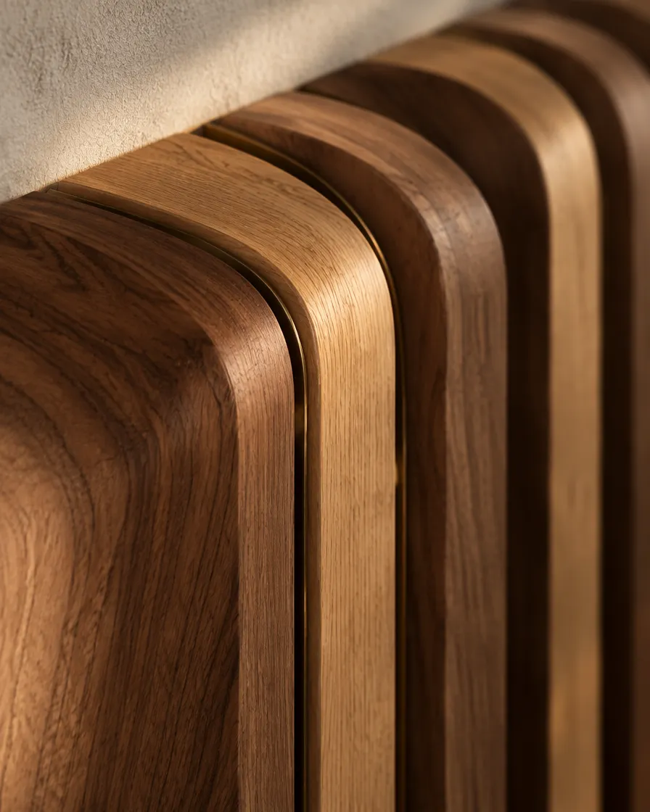
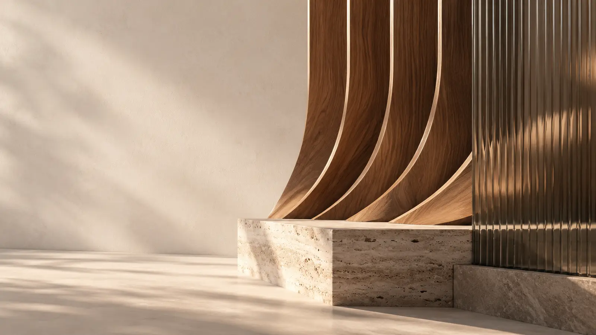
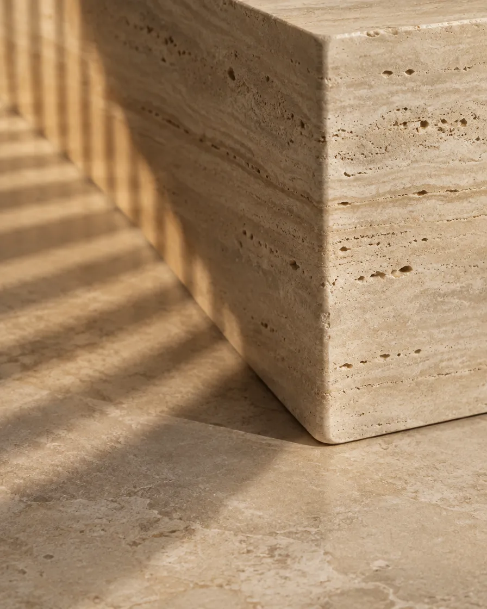
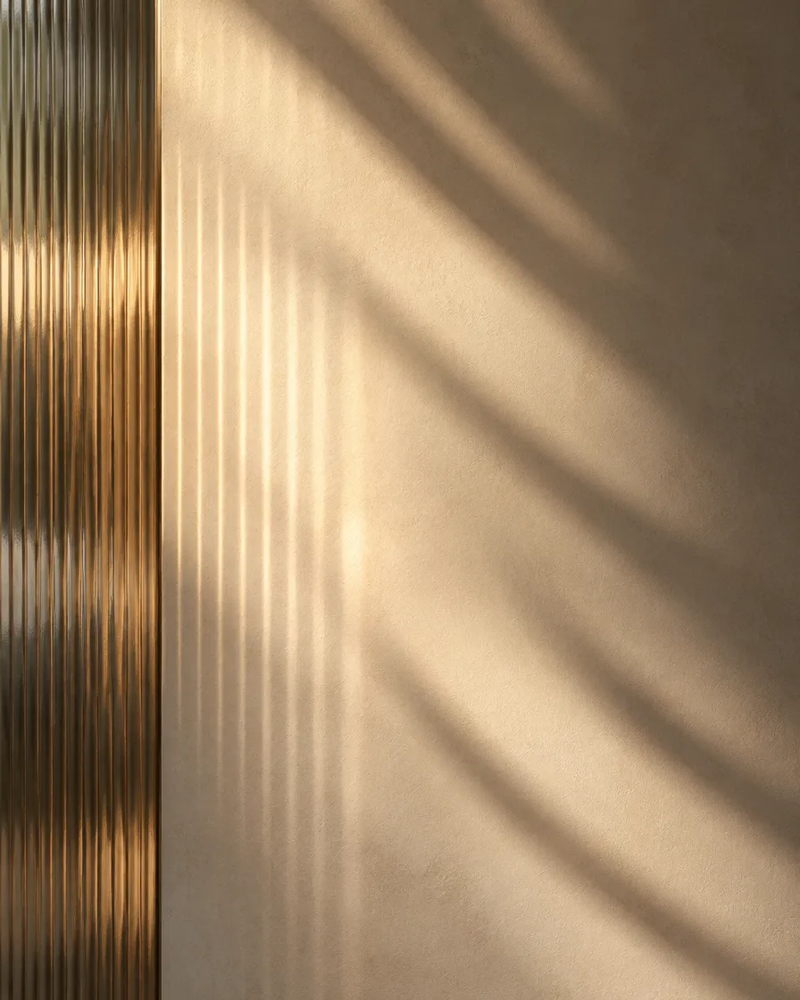
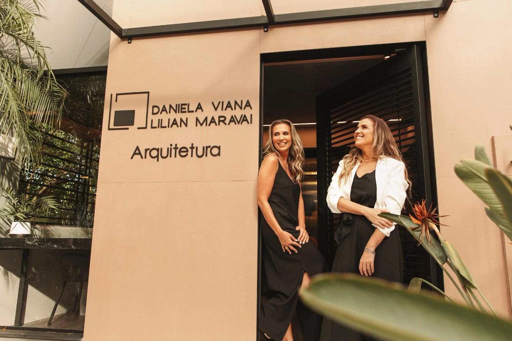
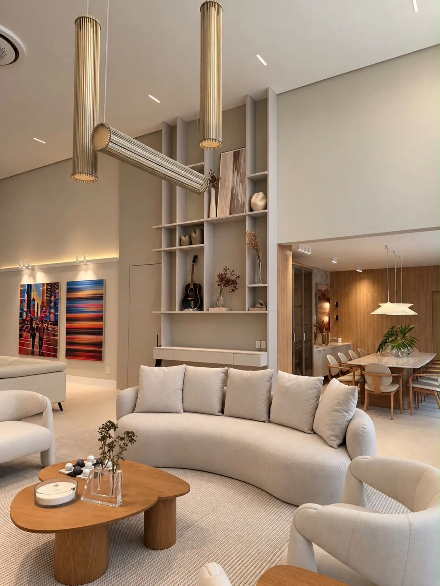
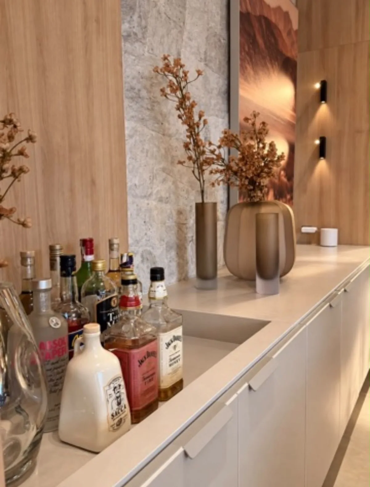

Madeira acolhe.
Veios, curvas e encaixes que aproximam o espaço de quem vive nele.
Daniela Viana · Lilian Maravai
Arquitetura e interiores em Criciúma, com atendimento em todo o Brasil.
Criciúma/SC · Atendimento em todo o Brasil

01 — Matéria e luz
A madeira acolhe. A pedra traz presença. A luz revela os detalhes. É na relação entre esses elementos e a forma de viver que cada espaço encontra identidade.

Madeira acolhe.
Veios, curvas e encaixes que aproximam o espaço de quem vive nele.

Pedra traz presença.
Travertino de textura natural, peso e permanência na medida certa.

Luz revela os detalhes.
Luz natural filtrada por vidro canelado, desenhando a parede ao longo do dia.

02 — Escritório
Daniela Viana e Lilian Maravai conduzem projetos de arquitetura e interiores em Criciúma, com atendimento em todo o Brasil.
Projetar é transformar.
Daniela Viana
Lilian Maravai
Arquitetura e interiores
03 — Portfólio
Ambientes e detalhes publicados pelo escritório. Madeira, pedra e luz se encontram em uma arquitetura que acolhe. Explore cada imagem na publicação original.
Ver projetos no Instagram

04 — Contato
Conte o que você imagina para o seu projeto.
Criciúma/SC · Atendimento em todo o Brasil